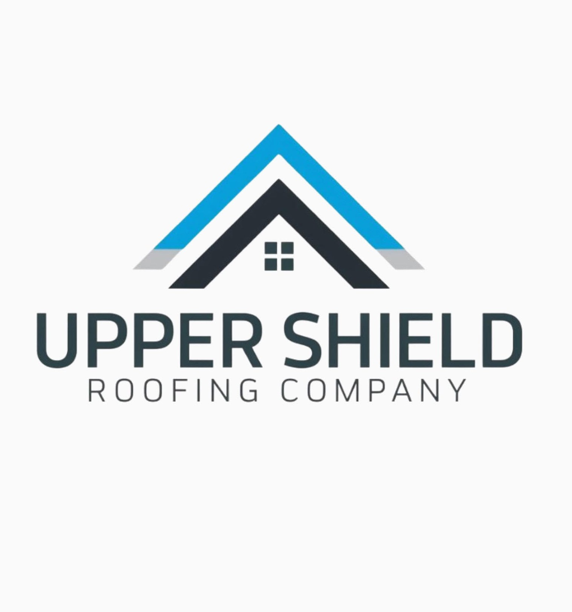
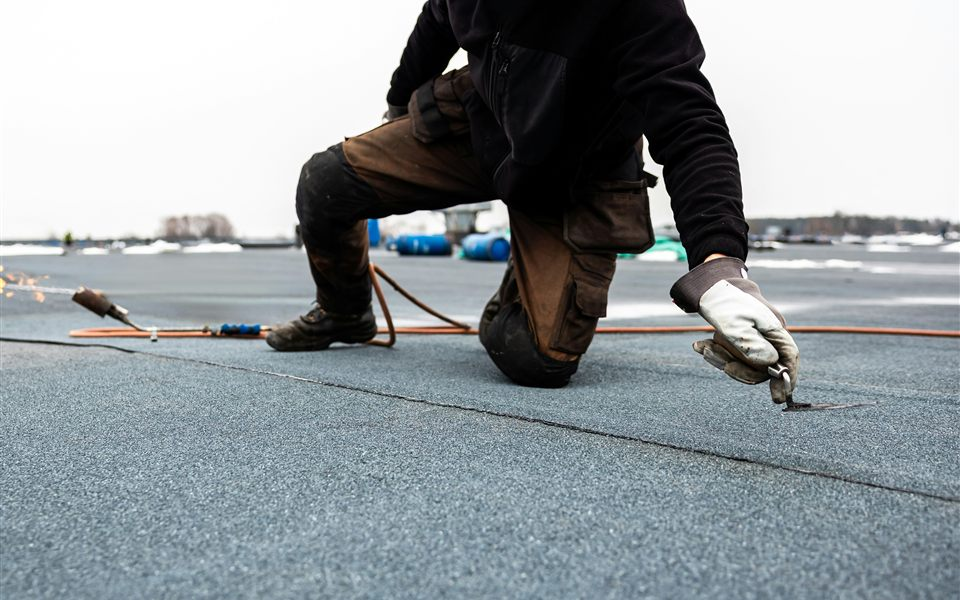
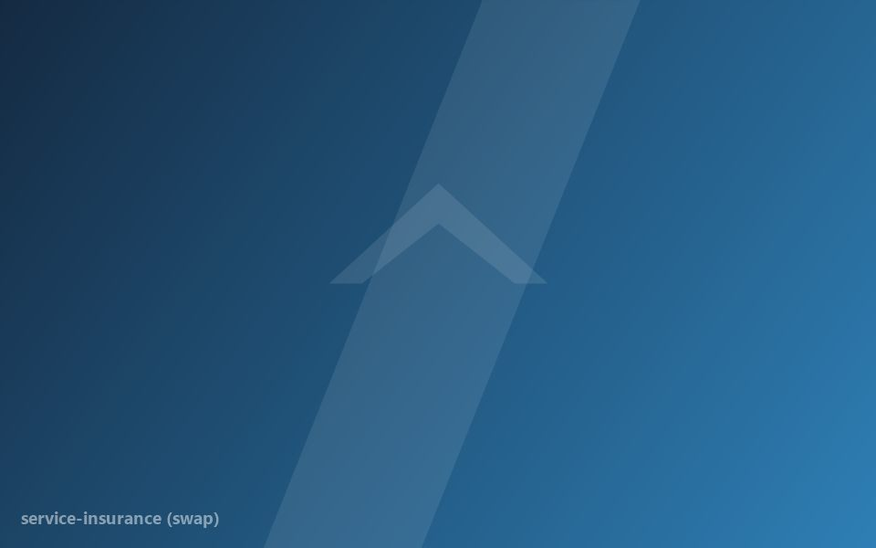
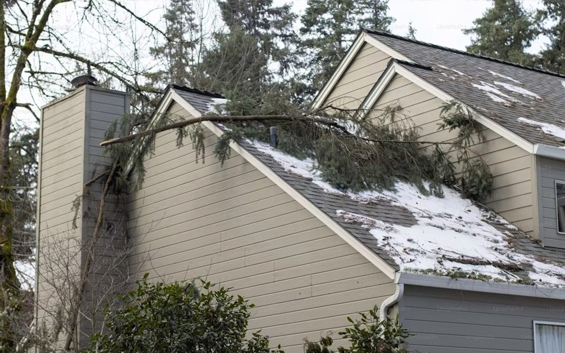
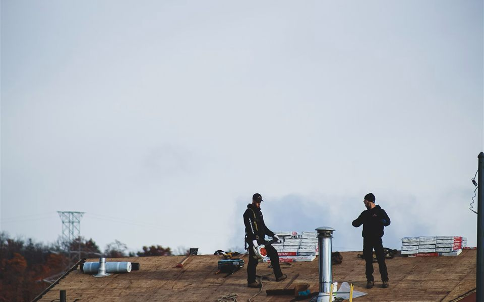
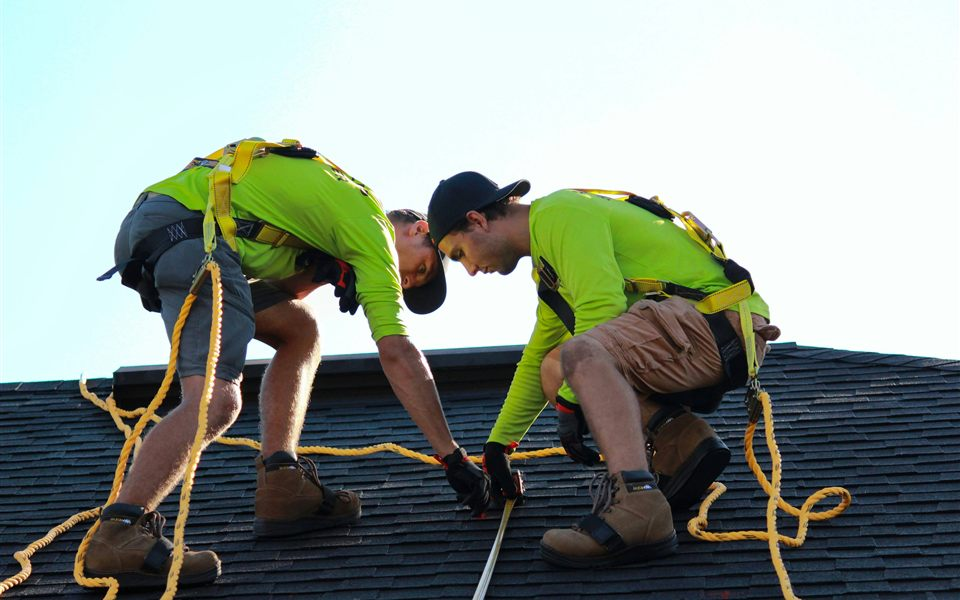
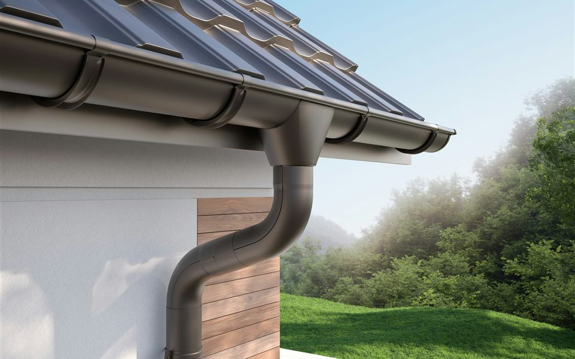

Upper Shield Roofing is a family-operated company built on integrity, experience, and strong relationships. When storms hit, we inspect the damage, guide your insurance claim, and restore your roof with one trusted team.

Storm damage is stressful enough without chasing contractors and deciphering insurance paperwork. Upper Shield handles the whole process under one roof, so you deal with one trusted team instead of coordinating three or four companies.
Our founder brings over 10 years of construction experience, with the past 4 years dedicated specifically to storm restoration across Texas, Colorado, and Wyoming.
From the first inspection to the final shingle, every step is handled by the same team that gave you their word.

A thorough, zero-cost inspection that documents hail and wind damage, including the damage you can't see from the ground.
Learn More
We guide you through filing, meet the adjuster on-site, and document the work through completion so nothing gets missed.
Learn More
Repairs and full replacements completed to your insurance scope, built to city code and backed by our word.
Learn More
Full replacements that meet city code, with quality materials and a crew that treats your home like their own.
Learn More
From missing shingles to slow leaks, we fix the problem at the source before it becomes a bigger one.
Learn More
Storms rarely stop at the roofline. We handle the rest of the exterior so your whole project finishes with one contractor.
Learn MoreA clear process, honest communication, and no surprises along the way.
We complete a 35-point inspection and document every sign of hail or wind damage, visible or not.
We walk you through filing with your insurance company and make sure the damage is reported correctly.
We meet your adjuster on-site to point out everything we found, so the scope reflects the real damage.
Your roof is restored to code, the work is documented through completion, and we don't leave until it's right.
Last year, a homeowner's insurance claim was denied after a hailstorm, and they thought that was the end of it. With a second inspection, we discovered missed damage and helped correct the claim details. From there, we guided them every step of the way, met with the adjuster on-site, and got the claim approved.
Today they have a fully replaced roof that meets city code, and peace of mind moving forward. If your claim was denied or you're unsure about storm damage, don't give up. There may still be options.
Roofs restored, claims approved, and homeowners who can stop worrying about the weather.
Based in Austin and trusted by homeowners across the region.
Storm restoration beyond Texas: our team has dedicated storm restoration experience across Texas, Colorado, and Wyoming.
Hail and wind damage isn't always visible from the ground, and waiting can cost you your claim. Schedule your free 35-point inspection today.
Schedule My Free Inspection